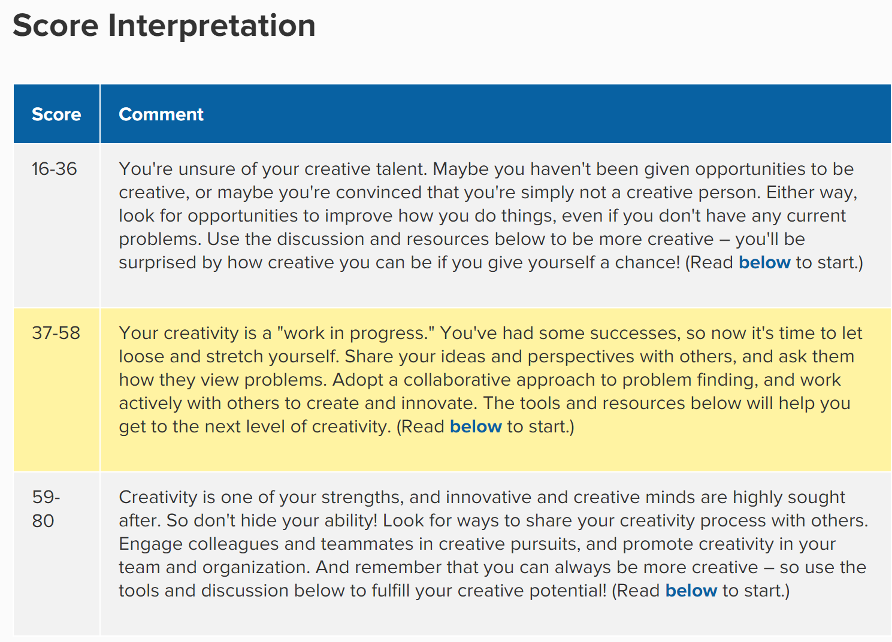

Name: Joseph Tselios
Student Number: s3858508
Email: josephtselios@outlook.com
General Information: I'm 24 years old and currently live in Melbourne, Australia. While my parents are from Greece and Italy, I still consider myself to be Australian. My education has been placed on hold for a few years since I started work full time at a very young age however I'm back at it again with a passion to find a career that I am passionate about. While I understand some Greek, Italian and japanese, my main spoken language is English. I have a drive for success and cannot wait to persue a career in a field that I actually have passion for. IT, I'm ready for you baby! A hobby of mine is music, working out and of course, League of Legends. I'm allergic to cats, but still think they are very cute.
Facebook: Joseph Tselios
My interest in IT begun at a very young age. I grew up as a morman in a strict household where I had to find my own source of fun. This is when I found a cd called 'encyclopedia' I found it amazing that I could load this CD into the computer and learn about so many different things. I wasn't allowed to play video games at the time, however learning about geckos was allowed. It was thanks to IT that I could have this opportunity to learn. While I have no professional IT experience, at the age of 13 I was playing around with mods for Morrowind while at high school. I also was taught from a friend on how to build computers. My passion for IT was never set in stone though until I got a taste of doing something as a career that I didnt have passion for. I learned that I am a person that requires constant goals to stay motivated and excited. Doing the same thing everyday makes me honestly feel depressed and like what I am doing has minimum purpose. The IT industry is constantly growing, new challengers are created each day, this concept excites me.
I chose RMIT since it was the only university that offered the course I wanted to study through Open University. I have previously studied I.T at Murdoch University through Open University, however Murdoch didn't match my expectations. I am glad to say however, the strucutre that RMIT has demonstrated showcases professionalism and gives students like me an easier time with understanding materal.
I expect to learn what it takes to excel in the IT industry. I expect to learn what organisations are looking for in an employee. Gaining the relevant skills for a job is one thing, but also becoming an employee that companies want is a completely different skill.
My ideal job is not something I have put deep thought into, I would prefer to gain experience within the IT indsutry before setting my goal on my end position within the industry. As mentioned previously I want to constantly grow. Furthermore, my ideal job for right now will be a level 1 help desk position that will enable me to feel the IT industry out and better understand it. Below is a link to the job advertised on seek and an image incase the job gets removed.
Job: Level 1 Help Desk Position
The level 1 helpdesk role would require me to report directly to the operations manager. This would give me the opportunity to ask questions and pick the brains of somebody who has more experience in the indsutry than me, allowing myself to learn through others mistakes before making them myself. Other duties would be use of telephone and remote support, installation and configuration of clients desktops and laptops, maintenance of client networks and minimal on-site technical support. The most appealing element to this position is that it will give me the opportunity to development a strong foundation. From there, the world is my oyster.
The skills required for this position are vast. I would need to be professional, have experience with team viewer, windows 7 Pro and Windows 10 Pro, active directory, eftpos and POS expeirence, SQL, exchange and office 365. I also am required to have a minimum of 5 years experience in a similar role and a Univeristy degree in IT. It's safe to say I dont meet the expectations just yet, but with hard work I know I will get there.
My current skills, qualifications and experience wouldn't help me with gaining this position. While I have years of experience providing customer service, none of it has been around IT. I've worked as a security supervisor for the National Gallery of Victoria which does show professionalism and the ability to work in a stressful environment however it unfortunutly does not assist with my application for an IT job.
My plan is quite simple. Currently I will complete my IT degree online while still working full time at the gallery and practicing on my professionalism. I will then gain an entry level position in IT, regardless of pay, the experience is what I will want. Even if I need to do volunteer work to gain expeirence I am happy to do so. Next I would find a decent job in IT to further enhance my experience. The skills I will be developing in this process will all be IT based, it may be through scripts, basic netowkring or even simple on site IT assistance.
I have completed three different tests, the results are below.
16 Personality Testest: The results of this test confirms my own idea of me. I like being in control, I enjoy leading the direction of groups and even giving people directions when they feel lost. This does mean that when forming a team I should consider if anyone else has the same personality with me as I do not want to clash. Maybe we can both lead or I can accept that in this situation I will take a more back seat approach. These results could also make my team members relax as some people find leading to be a scary concept.

Learning Style Test: My learning style makes complete sense to me. I've always noticed that having a conversation or discussing in a group setting has always been an easier way for me to learn. I think this means that when forming a team I should keep my eye out for other people who also learn the same way. The beahviour of our team could change since we all may be more open to having open calls with each other through skype/discord to discuss things as a group compared to messages that have a hard to read tone.
Creativity Test: These results honestly mean little to me since my creativity is usually heavily influenced by the topic at hand. These results showcase that in a team environment I should be able to come up with some creative ideas if I'm passionate about the topic.When forming a team I should look for more creative people to fill in my lack of creativeness.
Overview: The project that I would like to work on would be a 2D platformer video game created through Unity. However, I wouldn't want to make just another basic platformer game. I would want to ensure that it was a platformer with a twist. It is currently 2020, games get released so often and the competition is quite scary, however how many 2D platformer games do we play that has a sense of realism to them? My idea would be to create a 2D platformer that has a strong focus on mechanics.
Motivation: In 2020 we have heavy competitors from the console end of gaming that can create games that are much more realistic to life than a 2D platformer. However a lot of these games have a large learning curve when playing them. They also require a heavy amount of time dedicated to the game when compared to the simple concept of a 2D platformer. Teenagers and adults would be the main market, a lot of the time it is hard to dive deep into video games when life is constantly racing ahead, this is where the idea of a 2D platformer with a mechanical learning curve comes into play. You won’t need to dedicate too much time to understanding the story of the platformer or even waste time appreciating the graphics. The concept is simple. Start the game, challenge your mechanics, exit the game.
Description: I would want the game to start off with a tutorial to introduce the user on how to play the game. Key mechanics will be crouching, jumping running, shooting and of course, dying. We would need to display health bars for all players, have a large range of weapons and different maps/stages that the user can play through. I also would like there to be a goal, for example when clearing a stage you get the option to upgrade your guns or armor. This will allow to the user to feel like not only are they challenging themselves by playing a mechanical game but they are also rewarded when clearing a stage. (Little do they know that I would also like to introduce a similar mechanic that I found in the elder scrolls games, when the users character becomes stronger, the NPC’s in the game follow along. This means that even if the user clears a stage and ‘upgrades’ his character, the next time he plays the next stage, it will only be harder for them. One concept that I have always hated is when your player almost feels invincible, games that are supposed to be challenging are supposed to be challenging, I remember playing Saints Row as a kid and thinking “Wow I can hide behind a car and the NPC never walk around to kill me even though I have no ammo and am one shot away from being dead” Instead I simply waited regenerated my health and ended up beating all the NPC’s with my fists while they had shotguns. This idea is super silly to me since my goal for this game would be realism. A key feature of this game would also be the ‘simple’ movement mechanics. The whole reason it is called ‘Left, Right, Yeah, Right’ is because I would like to implement a mechanic that for the user to move the players right leg he must click right arrow, to move the left leg he must click left arrow. Clicking right arrow twice in a row would stun the character since they fall over due to a failure of mechanics. Reloading will also be another key mechanic that I want to implement a system to. For example I want there to be a pressure bar in the game that shows the user how much pressure the character is under. If surrendered by 5 enemies, the pressure bar fills meaning that actions (such as reloading) require more effort to do. Lets say to reload under no pressure, you need to type in the numbers “5,6,5,4” but to reload with a half filled pressure bar you need to type in numbers “5,9,3,5,7,1,0,2” Doing this correctly results in a reloaded weapon, doing this incorrectly results in wasted bullets since they will ‘drop’ onto the floor. The idea of realism is the key concept I would like to implement into this 2D platformer idea.
Tools, Skills and Technologies: The software that we would use would be Unity since I have used it before. We obviously will also need a PC and many different programs to create the art and sound affects required for the game. Creating scripts for the game will also be a challenging task since I am not proficient at any computer language just yet. I have touched Java, scraped C and from memory Unity uses C# which I have never touched. Using Microsoft Visual Studio would be a good place to begin with C# since the interface is easy to learn however the bump in the road will be learning C# thoroughly. It is quite feasible to learn the skills needed; however, it will just take some time unless we hired someone that is proficient in C#.
Outcome: If the project was successful the outcome would be that we would have created a 2D platformer game with a sense of realism and a true challenge of mechanics. The impact of this development would mean that we could give kids, teenagers and adults a game that allows them to practice mechanics and challenge themselves without dedicating hours to it. The fact that this game would also be on PC and not require heavy graphical usage means that even those with older computers would still be able to play the game just fine. This opens up the amount of people that we can market the game to. Many console gamers tend to prefer console based on simplicity. Buy console, buy game, play game. PC users are usually more tech savvy meaning they are happy to update graphics card, install graphic cards, ensure they have enough ram ect. Left, Right, Yeah, Right completely disregards the need to worry about graphical intensity since its focus will be on realism and challenging the user.